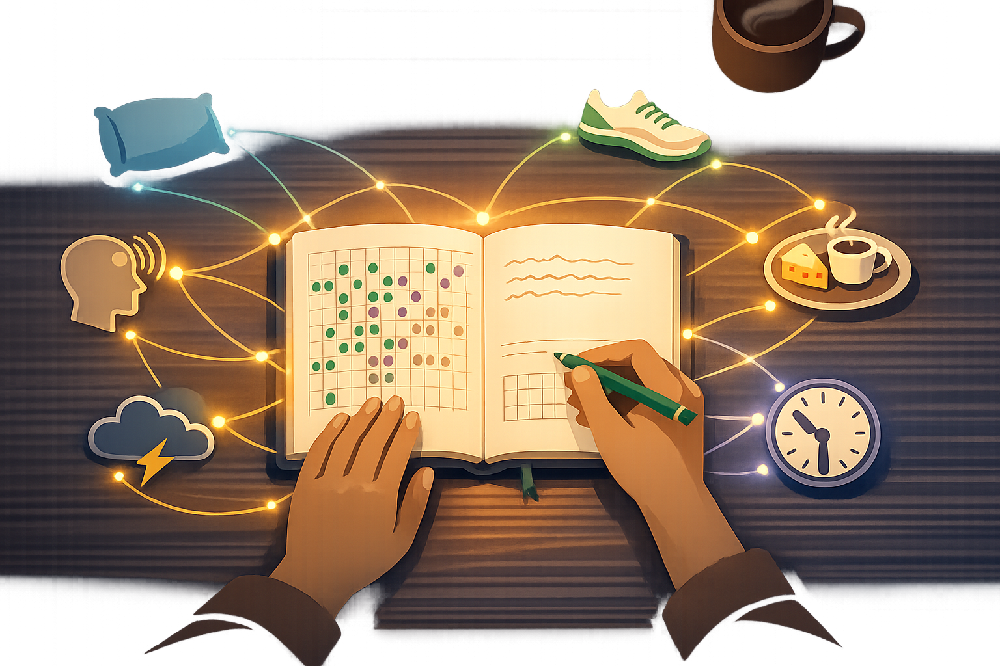

By Rustam Iuldashov
30 years lived experience with chronic migraine | Sources: 22 peer-reviewed references including Headache (n=1,501), The Journal of Headache and Pain, Life | Last updated: March 14, 2026
Medical Note: This content is based on peer-reviewed research from Headache, Frontiers in Pain Research, Pain and Therapy, and Frontiers in Neurology. The author is a patient advocate, not a licensed medical professional. Always consult your healthcare provider before making changes to your medication or treatment plan.
The Number
I remember the fluorescent light in the bathroom. I remember my hands on the sink, cold porcelain, staring at my own face at 3 a.m. and thinking: this is the fourteenth time this month.
Fourteen. Sometimes fifteen. Sometimes twenty.
Twenty days a month, migraine owned me. Not the dramatic, movie-version kind where you press your fingers to your temples and close your eyes for a moment. The real kind. The kind where you cancel the thing, miss the meeting, leave the dinner, pull over the car, lie in the dark, beg for sleep because sleep is the only exit.
I’m 42 now. My number is two.
I need you to understand what sits between those two numbers. Not a pill. Not a procedure. Not a moment of grace where everything clicked. What sits between twenty and two is thirty years of getting it wrong, a handful of small decisions I got right, and the stubborn refusal to believe this was as good as it would ever get.
The Trap I Built Myself
Here’s a confession I don’t enjoy making: for 26 years, from age 12 to 38, I was making myself worse.
The triptans were the center of it. If you’ve never used one, it’s hard to explain the seduction. You take a pill. Thirty minutes later, the pain is gone. Not dulled—gone. Like someone switched off a light. After years of lying in dark rooms with no options, triptans felt like a miracle.
So I used them. Every attack. Sometimes two attacks in a day.
What nobody told me—and what I didn’t bother to learn, because the pills worked—was that my brain was building a trap. Triptans taken more than 10 days a month can cause the very headaches they treat. Doctors call it medication overuse headache, or MOH.[1] It affects roughly 1–2% of the general population, but among people with chronic migraine, it’s everywhere.[2] Triptans and opioids carry the highest risk and can trigger MOH faster than other painkillers.[3]
I was caught in a rebound cycle so textbook it could go in a medical journal. More headaches. More triptans. More headaches. The medicine I trusted was poisoning the well.
The cruelest part? Each individual pill genuinely helped. Each one delivered exactly what it promised. The damage only showed at the monthly level. You’d need to step back, count the days, see the pattern. And who does that when they’re in pain? You take the pill. You feel better. You don’t question what’s working.
When I finally understood—when some article, some fragment of medical knowledge made it through my thick skull—I did the hardest thing I’d ever done with migraine. Harder than lying in the dark. Harder than leaving a room full of people.
I stopped reaching for the blister pack.
Mild attacks: ibuprofen or a cold compress pressed against my temple. Moderate attacks: I waited. I breathed. I clenched my jaw and waited some more. Triptans became the last resort—severe attacks only, the ones where nothing else touches the pain.
The first six weeks were miserable. I won’t dress that up. My brain, accustomed to regular triptan input, screamed for what it was used to getting. But within two months, something shifted. The baseline started dropping. Research confirms this: most patients improve within 8–12 weeks of reducing overused medications.[3]
That shift was the first crack in the wall.
Asphalt and Endorphins
The real breakthrough came from my feet.
Five years before the war—before Migraine Companion existed, before I’d written a single line of code—I started running. Nothing heroic. Thirty minutes. Neighborhood streets. Three, sometimes four mornings a week. I did it for my mood, my weight, my restlessness. Not for migraine.
But the migraines noticed.
Slowly, then unmistakably, the attacks thinned out. A month passed with 8 days instead of 15. Then 6. I wasn’t tracking carefully—I didn’t know yet that tracking mattered—but the change was too large to miss. My body felt different. Looser. Less like a system on permanent high alert.
Then war came to Ukraine. Running stopped. The electricity cut out for 10, 12, 16 hours a day. Routines collapsed. And the migraines returned, full force, as if they’d been waiting in a back room the entire time.
The correlation was so clear it hurt.
When I finally found the research, years later, I understood why. A 2024 network meta-analysis—28 studies, 1,501 patients—found that moderate-intensity aerobic exercise was significantly superior to pharmacological treatment alone in reducing migraine frequency.[4] Not slightly better. Significantly superior. Exercise beat medication-only approaches across nearly three decades of accumulated data.
A 2025 dose-response analysis found the sweet spot: 300–600 MET-minutes per week—roughly 40 minutes of jogging, three times a week.[5]
Almost exactly what I’d been doing on those pre-war mornings without knowing the science behind it.
But here is the part every exercise recommendation leaves out, and it matters: exercise can also trigger migraine. About 22% of patients report it.[6] I lived this. When I tried to restart after months of inactivity—jumping straight into the intensity I remembered—every single session ended with an attack. My brain punished me for the sudden demand.
The fix sounds simple. It isn’t, because it requires patience when you’re desperate. Start at half your capacity. Increase by no more than 5% per week.[7] Warm up properly—high intensity without preparation is one of the most common exercise-related triggers.[6] Build slowly. Let your nervous system adapt.
I walked first. Then walked fast. Then jogged slow. Then jogged my old pace. It took weeks. Each step felt absurdly small. But no attacks. And by week six, the protective effect kicked back in—that familiar feeling of a brain running cooler, reacting less, absorbing the bumps of daily life without tipping into pain.
The science explains the mechanism: regular exercise releases endogenous opioids and endocannabinoids—your body’s own painkilling system. It activates descending pain-modulating pathways in the brain. Over time, it raises your triggering threshold.[6][8] Your brain becomes less reactive to the stimuli that would normally launch an attack.
I think of it differently. Running taught my nervous system that not every spike in heart rate is a threat. That effort doesn’t always mean danger. That my body could handle more than it believed.
⚠️ When to Seek Emergency Help
If you experience a sudden, severe headache unlike anything you’ve had before—especially during or after exercise—seek emergency medical attention immediately. This could indicate a serious condition such as subarachnoid hemorrhage or reversible cerebral vasoconstriction syndrome. New onset of headache with exercise always warrants medical evaluation.
Paying Attention
Exercise was the biggest lever. But a lever needs a fulcrum, and mine turned out to be something embarrassingly simple.
I started paying attention. Because nobody else was going to.
For years, my neurology appointments followed the same script. I’d sit in the office, describe the pain, and leave fifteen minutes later with a new prescription. Not once did a doctor ask what time I went to bed. Nobody asked what I ate before an attack. Nobody mentioned that my sedentary lifestyle might be lowering my threshold for pain. The system is built to treat the symptom in the shortest time possible—it isn’t designed to audit your life. So they handed me pills, and I took them, believing that was the only path.
It wasn’t malice. These were good doctors working inside a broken model. Fifteen minutes isn’t enough time to untangle thirty years of sleep habits, dietary patterns, and stress responses. The prescription pad is the tool the system gives them, so the prescription pad is what they use.
That realization—quiet, uncomfortable, undeniable—changed something in me. Not overnight. But slowly, I understood: nobody was coming to solve this. No doctor would spend the hours it takes to map my triggers, redesign my sleep, rebuild my relationship with exercise. Not because they didn’t care. Because the system doesn’t allow it.
So I made a choice that felt strange at the time and obvious in hindsight: I would become the leading expert on my own migraine.
Not a doctor. Not a researcher. Just the person who pays the closest attention. The person who stops treating each attack as a random disaster and starts treating it as data—a signal from a brain that’s trying to tell me something, if I’d only learn its language.
I want to be careful here, because I know how this sounds. “Take responsibility for your health” is easy to say from the other side. When you’re in the middle of it—fifteen attacks a month, barely functioning, crawling through your days—the last thing you need is someone telling you to try harder. That’s not what I’m saying. What I’m saying is: you know things about your migraine that no doctor ever will. You live inside it. You feel the warning signs at 6 a.m. that no blood test can measure. You notice that something was different yesterday, even if you can’t name it yet. That knowledge is power—not a burden. And the moment you start treating it as power, the equation shifts.
That shift—from passive patient to active investigator—was the real turning point. Not any single pill, not any single run. The decision to study my own condition the way you’d study anything you need to live with: carefully, honestly, without looking away.

At 38—after 26 years of eating whatever was in front of me, sleeping whenever I felt tired, and treating each migraine as an isolated catastrophe—I began writing things down. What I ate. When I slept. What the weather was doing. What happened in the 24 hours before every attack.
The diary was humbling. Foods I’d eaten my entire life—aged cheeses, certain cured meats, anything heavy in tyramine—kept appearing in my pre-attack window. Not every time. That’s what made it so hard to see without the data.
Research confirms this frustration. Between 10% and 80% of migraine sufferers report food triggers—that enormous range reflects just how difficult it is for individuals to reliably identify their own.[9] A single ingredient might trigger an attack one Tuesday and do nothing the next. Researchers call this the “nonlinearity” of dietary triggers[10]: factors like sleep deprivation, stress, or hormonal shifts lower your threshold, making you vulnerable to foods that would otherwise be harmless.
This is exactly why a diary matters more than any elimination diet. Elimination diets are blunt instruments—you remove entire categories and hope for the best. A diary is a scalpel. It creates data. Data reveals patterns. Patterns become personal rules. Not rules from a book. Rules from your own body, written in your own hand.
Sleep was the other reckoning. I’d always treated sleep as negotiable—a thing to sacrifice for work, for screens, for one more episode. The research cured me of that. The bidirectional relationship between sleep and migraine is one of the strongest in headache science: poor sleep worsens migraine, and frequent migraines destroy sleep.[11] One randomized study found that behavioral sleep modification—simply fixing bad sleep habits—could revert chronic migraine back to episodic.[12] In children, improving sleep hygiene alone produced a threefold drop in attack frequency.[13]
Threefold. From fixing sleep. That number changed everything for me.
My rules became iron. Same bedtime. Same alarm. Seven days a week. No exceptions for weekends, holidays, or “just this once.” Dark room. No screen in the last thirty minutes. The migraine brain hates change[14]—and my brain, it turned out, hated change most of all.
These rules worked for me. But I didn’t know they were universal until Migraine Companion launched and people in 70+ countries started describing the same pattern—different details, same arc.
Three People Who Found Their Way
A teacher from Germany, mid-30s. She’d been taking painkillers daily for years without realizing she’d crossed into medication overuse. Her doctor told her; she didn’t believe him. When she finally cut back and started a walking program—20 minutes a day, nothing more—her monthly migraine days dropped from 18 to 6 in four months. She told the chat room: “I was medicating myself into more pain. That’s the sentence I couldn’t accept for two years.”
A university student from Brazil. His diary revealed something specific: attacks clustered on Saturdays and Sundays. Classic “let-down” migraine—the nervous system relaxing after a demanding week and triggering an attack in the process. His fix was counterintuitive: make weekends less relaxing. Same wake time as Monday. Same meal schedule. Same structure. The weekend attacks nearly disappeared.
A mother from Japan. She’d spent years trying to eliminate every possible trigger—and the effort made her anxious, which made the migraines worse. Her breakthrough came when she stopped subtracting and started adding: consistent sleep, gentle daily walks, enough water. As her baseline resilience strengthened, foods that used to trigger attacks simply didn’t anymore.
Her experience isn’t an outlier. A clinical study found that a coping-focused approach reduced migraine frequency by 36%, compared to just 13% in a trigger-avoidance group.[7]
Building a stronger system beats trying to remove every threat from the world.
The System Nobody Prescribes
Clinicians have an acronym for what I spent 26 years learning the hard way: SEEDS. Sleep. Exercise. Eat. Diary. Stress management.[15] Five pillars. The evidence behind each one is substantial.[16][17]
But the acronym misses the point. These aren’t five separate interventions. They’re one system with five moving parts—and every part makes the others work.
Better sleep makes exercise tolerable. Regular exercise lowers stress. Lower stress improves sleep. Consistent meals stabilize the neurochemical environment that determines whether your brain tips into an attack or rides through. Remove one pillar and the others wobble. Strengthen all five and you have something no single medication can provide: a brain that runs cooler, recovers faster, and resists the cascades that turn a normal Tuesday into a day lost in the dark.
The lifestyle modification evidence from Frontiers in Neurology says it plainly: physical activity, healthy diet, adequate sleep, and avoidance of drug overuse all contribute significantly to reducing attack frequency and severity.[17] No single factor was sufficient alone. The effect was cumulative. Synergistic.
I want to be honest about what this costs. Building a system takes months. There is no week one where everything gets better. There are weeks where you exercise and still get migraines, eat perfectly and still get migraines, sleep eight hours and still wake up with an aura crackling across your vision. The system doesn’t promise zero attacks. It promises fewer. And “fewer” accumulates slowly, so slowly that you might not notice until you look back at three months of data and realize: the number changed.
What I’d Tell That Kid
Sometimes I think about the 12-year-old lying in a dark room in a city he hasn’t lived in for decades. The aura had just come—that fracturing of vision, like looking through a broken window—and he didn’t know what it was. He thought he was going blind. He thought something was deeply, permanently wrong with him.
I can’t reach him. But if I could, I wouldn’t explain triptans or MOH or MET-minutes per week. He’s twelve. He’s scared.
I’d say: this isn’t your fault. It’s not a punishment. You’re not broken.
I’d say: your brain is wired differently—more sensitive, more reactive. That’s not a flaw you need to fix. It’s a system you’ll learn to manage.
I’d say: the things that help the most are going to sound boring. Sleep at the same time. Eat at the same time. Move your body. Pay attention. These are the things that, over thirty years, will take you from twenty migraine days to two.
And I’d say: one day you’re going to build something. During a war, in the dark, with eight hours of electricity and a wife who sees colors you can’t imagine. You’re going to make an app that helps people learn this faster than you did.
But right now, you just need to know: the number can change.
It changed for me. It will change for you.
Key Takeaways
- Medication overuse headache from frequent triptan use can paradoxically increase migraine frequency—reducing overuse is often the first critical step.[1][3]
- Regular moderate aerobic exercise (≈40 min, 3× per week) is significantly more effective than medication alone for reducing migraine frequency, but must be introduced gradually with proper warm-up.[4][5][6]
- Consistent sleep schedule—same bedtime and wake time daily, including weekends—is one of the strongest non-pharmacological interventions for migraine.[11][12][13]
- Food diaries are more effective than blanket elimination diets for identifying personal triggers, because dietary triggers are nonlinear and context-dependent.[9][10]
- The SEEDS framework (Sleep, Exercise, Eat, Diary, Stress) works as a single integrated system—each element reinforces the others.[15][17]
- Building baseline resilience reduces migraine frequency more than strict trigger avoidance.[7]
⚕️ Important Medical Disclaimer
This article is for informational and educational purposes only and does not constitute medical advice, diagnosis, or treatment. The author, Rustam Iuldashov, is not a licensed physician, neurologist, or healthcare professional. He is a patient advocate with 30 years of personal experience living with chronic migraine.
All clinical claims in this article are sourced from peer-reviewed research published in indexed medical journals. Study designs and sample sizes are noted where applicable.
Always consult a qualified healthcare provider for questions about your individual health, migraine treatment, or medication decisions. If you are currently using triptans or other acute medications frequently, do not stop or reduce your medication without consulting your doctor first—medication withdrawal should be medically supervised.
The community stories shared in this article are composite portraits based on common patterns documented in headache literature and anonymized discussions. This content was last reviewed for accuracy on March 14, 2026.
References
- Kebede YT, Mohammed BD, Tamene BA, Abebe AT, Dhugasa RW. “Medication overuse headache: a review of current evidence and management strategies.” Frontiers in Pain Research, 4:1194134 (2023). doi:10.3389/fpain.2023.1194134. Study design: Systematic review.
- StatPearls. “Medication-Overuse Headache.” NCBI Bookshelf (2023, updated). Study design: Clinical review. Prevalence estimates 0.5–2.6% general population.
- Koonalintip P, Phillips K, Wakerley BR. “Medication-Overuse Headache: Update on Management.” Life, 14(9):1146 (2024). doi:10.3390/life14091146. Study design: Review.
- Reina-Varona Á, Madroñero-Miguel B, Fierro-Marrero J, Paris-Alemany A, La Touche R. “Efficacy of various exercise interventions for migraine treatment: a systematic review and network meta-analysis.” Headache, 64(7):873-900 (2024). doi:10.1111/head.14696. Study design: Network meta-analysis. n=1,501.
- “Efficacy and optimal dosage of various exercises for migraine: a multilevel network and dose-response meta-analysis.” PeerJ, 20254 (2025). doi:10.7717/peerj.20254. Study design: Multilevel network meta-analysis. n=27 studies.
- Amin FM, Aristeidou S, Baraldi C, et al. “The association between migraine and physical exercise.” The Journal of Headache and Pain, 19(1):83 (2018). doi:10.1186/s10194-018-0902-y. Study design: Systematic review.
- Woldeamanuel YW. “Exercise Patterns and Migraine Management: A Multifaceted Approach.” American Journal of Lifestyle Medicine (2025). doi:10.1177/15598276251346394. Study design: Expert review. Cites RCT: coping-focused approach reduced frequency 36% vs 13%.
- Ogrezeanu DC, Núñez-Cortés R, Salazar-Méndez J, et al. “How much aerobic exercise is needed to reduce migraine? A dose-response meta-analysis.” Headache (2025). doi:10.1111/head.14951. Study design: Dose-response meta-analysis. n=253.
- Hindiyeh NA, Zhang N, Farrar M, et al. “The Role of Diet and Nutrition in Migraine Triggers and Treatment: A Systematic Literature Review.” Headache, 60(7):1300-1316 (2020). doi:10.1111/head.13836. Study design: Systematic review. n=43 studies.
- Gazerani P. “A Bidirectional View of Migraine and Diet Relationship.” Neuropsychiatric Disease and Treatment, 17:435-451 (2021). doi:10.2147/NDT.S282565. Study design: Narrative review.
- Korabelnikova EA, Danilov AB, et al. “Sleep Disorders and Headache: A Review of Correlation and Mutual Influence.” Pain and Therapy, 9:411-425 (2020). doi:10.1007/s40122-020-00180-6. Study design: Systematic review.
- Calhoun AH, Ford S. “Behavioral Sleep Modification May Revert Transformed Migraine to Episodic Migraine.” Headache, 47(8):1178-1183 (2007). doi:10.1111/j.1526-4610.2007.00809.x. Study design: RCT. n=43.
- Bruni O, Galli F, Guidetti V. “Sleep hygiene and migraine in children and adolescents.” Cephalalgia, 19(Suppl 25):57-59 (1999). doi:10.1177/0333102499019S2516. Study design: Clinical study.
- American Migraine Foundation. “Guide to Healthy Sleep: How to improve your sleep to better manage your migraine.” (2024). Clinical guidance.
- Development of Migraine Self-Care Scale. “SEEDS framework.” Scientific Reports (2025). doi:10.1038/s41598-025-17156-1. Study design: Methodological study. n=156.
- Haghdoost F, Togha M. “Migraine management: non-pharmacological points for patients and health care professionals.” Open Medicine, 17(1):1869-1882 (2022). doi:10.1515/med-2022-0598. Study design: Review.
- Agbetou M, Adoukonou T. “Lifestyle Modifications for Migraine Management.” Frontiers in Neurology, 13:719467 (2022). doi:10.3389/fneur.2022.719467. Study design: Review.
- Varkey E, Cider Å, Carlsson J, Linde M. “Exercise as migraine prophylaxis: A randomized study using relaxation and topiramate as controls.” Cephalalgia, 31(14):1428-1438 (2011). doi:10.1177/0333102411419681. Study design: RCT. n=91.
- Puledda F, Sacco S, Diener HC, Ashina M, et al. “IHS global practice recommendations for acute pharmacological treatment of migraine.” Cephalalgia, 44(6) (2024). doi:10.1177/03331024241252666. Study design: Clinical practice guideline.
- Ikram W, et al. “The Correlation Between Migraine Frequency and Sleep Disturbances in Adults.” Cureus, 17(7):e87282 (2025). doi:10.7759/cureus.87282. Study design: Cross-sectional. n=103.
- Burrowes SAB, et al. “Enhanced MBSR in episodic migraine: effects on sleep quality, anxiety, stress, and depression.” Pain, 163(3):436-444 (2022). doi:10.1097/j.pain.0000000000002372. Study design: RCT. n=98.
- La Touche R, Fierro-Marrero J, et al. “Prescription of therapeutic exercise in migraine, an evidence-based clinical practice guideline.” The Journal of Headache and Pain, 24:68 (2023). doi:10.1186/s10194-023-01571-8. Study design: Clinical practice guideline.

How We Create Content
- Peer-reviewed sources only. This article cites Headache, The Journal of Headache and Pain, Pain and Therapy, Frontiers in Neurology, Frontiers in Pain Research, Cephalalgia, Life, Pain, Open Medicine, Scientific Reports, and Cureus.
- Study transparency. Study design and sample sizes noted for all clinical references.
- Source verification. All claims backed by numbered references with DOI links.
- Experience + Science. 30 years personal migraine experience combined with peer-reviewed evidence.
- Regular updates. Articles reviewed when significant new research emerges.
- No conflicts of interest. No pharmaceutical funding. No supplement sponsorships. No medical device partnerships.
Your Number Can Change Too
Migraine Companion helps you build the system—track triggers, log sleep, monitor medication use, and discover your personal patterns. Start with Mi today.
Last reviewed: March 2026
Next scheduled review: September 2026